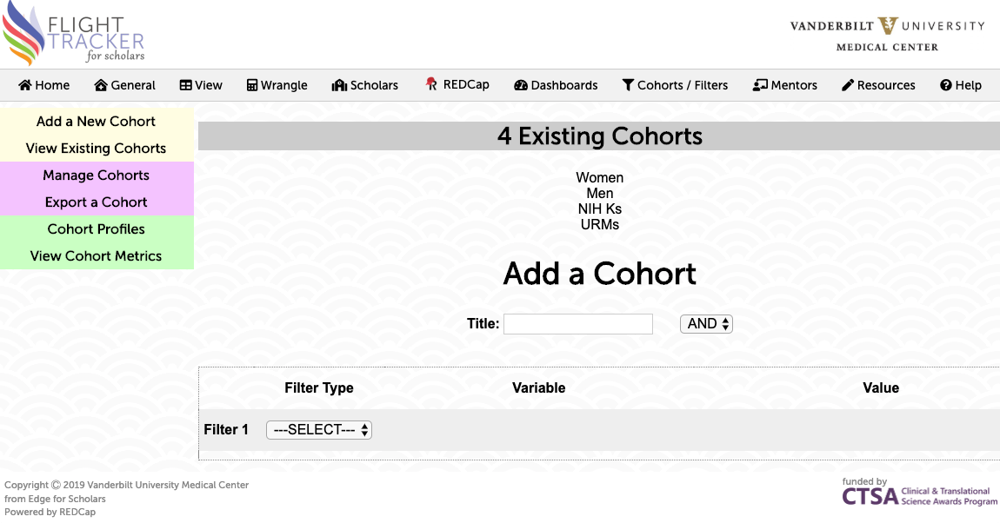

Situation: For a report to NIH, your office is asked what the percentage of women is in a given department, and the percentage of women with only an MD in this department.
Solution: This query is asking for two statistics: the percentage of women in this department and the percentage of women-with-MDs in this department. The cohort, therefore, consists of members of the given department. We need to find out the following three data points:
From there, simple math can be our guide. Our final results will consist of ([2] * 100) / [1] and ([3] * 100) / [1].
There are many ways we can tackle this problem. For one, we can export the values from the summary form (stored in the fields of summary_gender, summary_degree, and summary_primary_dept) via REDCap into a spreadsheet and use our spreadsheet program to find out these three values. There’s nothing wrong with that approach, but it is often not the most efficient, especially for questions where you need up-to-date data repeatedly. Instead, we will use the Career Development Tracker’s features to approach this issue.
The first step is to design a cohort for all people in this department. This will give us [1]. To accomplish this, we go to Cohorts / Filtering → Add a New Cohort. We can title this as “All in Department.” For Filter Type, select Demographic; for Variable, select Primary Department; and for Value, select “Has” and the department you wish to filter for. Click the button for Commit Filter. After the cohort has been committed, we can see the size of this cohort. Thus, we have the value for [1].

Now we need to see how many women are in this cohort, for [2]. On the left navigation bar, we can click View Cohort Metrics. Then we can select the cohort “All in Department” (or whatever we named it as above). This will take us to the Overall Summary dashboard. We want to see the effects of gender, so we click Demographics item on the left navigation menu. But this only tells us how much data is present for our cohort, not the data values themselves! (I went through this in order to show how you can learn about this tool simply by clicking around a little bit.)
Another potential site that could help is in the menu View → Demographics Table. Under the page title, you can select the Cohort “All in Department.” Scroll down the table to the rows containing Gender, and next to Female, we have our value for [2].
We don’t have an easy way to find [3] from this Demographics Table, but there is a way. We can go back to Cohorts / Filtering → Add a New Cohort and create a cohort of MDs in the department. Let’s go to this page. We can title this as “Department MD onlies.” Then for Filter Type, select Demographic; for Variable, select Primary Department; and for Value, select “Has” and the department you wish to filter for. Click the button for Add Row. Instead of committing the filter, we must add a second discriminating factor. On the second row, select Academic Degrees for Variable; for value, select “Has” and the degree “MD only.” Ensure that these will be AND-ed together by selecting “AND” next to the title. Then finally click Commit Filter.
We distinguish our MDs into three categories: “MD only,” MD + PhD, and MD + other (any other degree). This distinction correlates with the different tracks encountered in education.
Now we can go back to the Demographics Table (in the View menu). We can select our cohort “Department MD onlies” (or whatever we named it above). Then we can look up our count of Gender: Female for [3].
From there, simple math takes us to our final statistics.